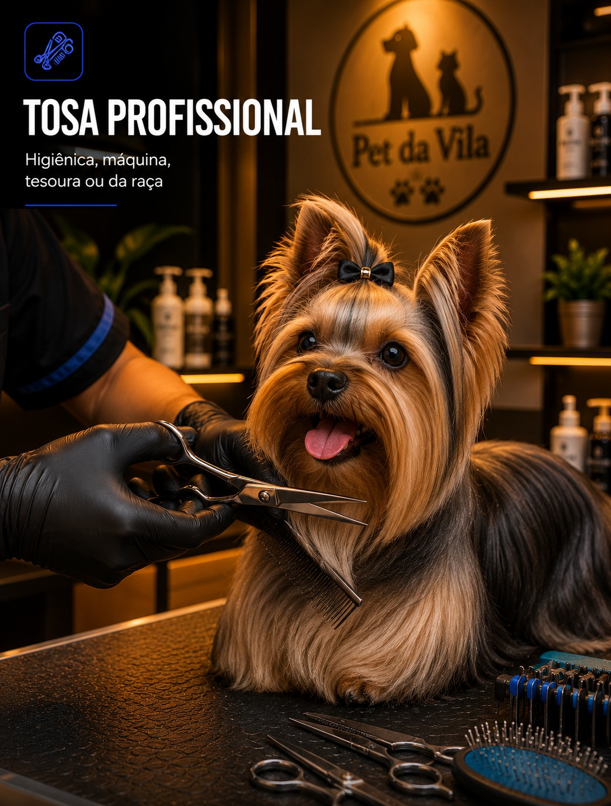
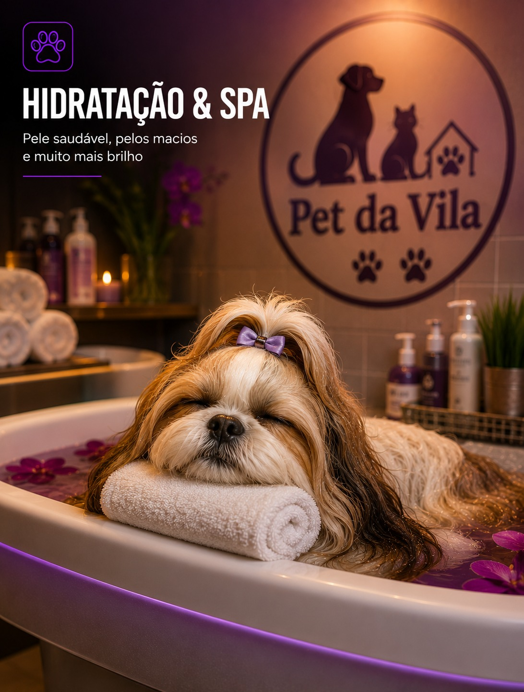
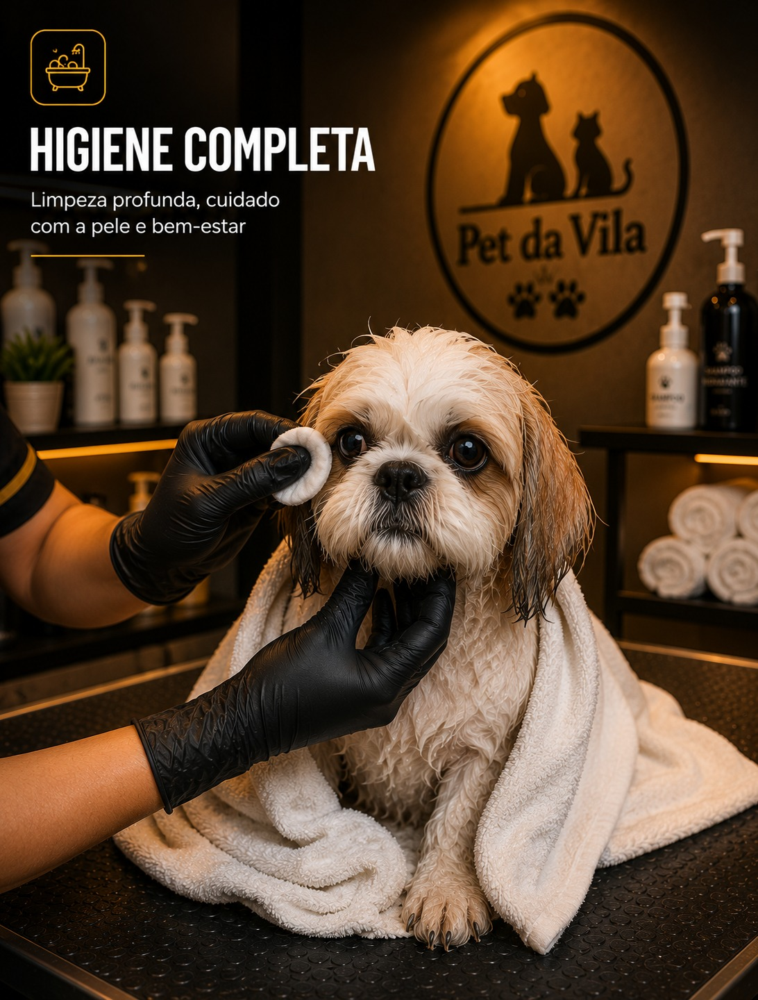

🐾 Banho e Tosa · Táxi Dog · Estética Animal — São Paulo
Banho e Tosa em São Paulo
Banho e Tosa em São Paulo
Vila dos Remédios
Cuidado profissional para cães e gatos desde 2014.
Agende com hora marcada — sem fila, sem espera.
↓
Estética Animal Profissional em São Paulo
.jpg)
.jpg)
.jpg)
Nossos Serviços
Serviços completos para cães e gatos em Vila dos Remédios, São Paulo
BANHO PARA CÃES
BANHO PARA GATOS

TOSA PROFISSIONAL

HIDRATAÇÃO & SPA
TÁXI DOG

HIGIENE COMPLETA
Serviços de Banho e Tosa em São Paulo
Tudo que seu Pet Precisa e Merece
Conheça cada serviço e agende pelo WhatsApp com um clique
Táxi Dog & Cobertura
Atendemos na Zona Oeste de SP
Táxi Dog disponível num raio de até 6km — buscamos seu pet onde você estiver
📍 Vila dos Remédios·
📍 Vila Mangalot·
📍 Jardim Santo Elias·
📍 Parque São Domingos·
📍 Vila Jaguara·
📍 Vila Piauí·
📍 Vila Santa Edwiges·
📍 City América·
📍 Jardim Marisa·
📍 Chácara São João·
📍 Parque Maria Domitila·
📍 Vila Boaçava·
📍 Jardim Mangalot·
📍 Vila Jaraguá·
📍 Jardim Mutinga·
📍 Vila Guedes·
🚗 E regiões próximas!·
Por que nos escolher
Diferenciais do Pet da Vila
❤️
Atendimento com Amor
Cada pet treated com o mesmo carinho que daríamos ao nosso próprio animal.
🏆
11 Anos de Experiência
Desde 2014 cuidando dos pets da Vila dos Remédios, São Paulo.
📅
Horário Agendado
Sem filas. Atendimento exclusivo para o seu pet na hora marcada.
🚗
Táxi Dog SP
Buscamos e levamos seu pet. 16+ bairros atendidos na zona oeste.
Avaliações Google
O que nossos Clientes Dizem
Avaliações reais de tutores sobre o banho e tosa na Vila dos Remédios